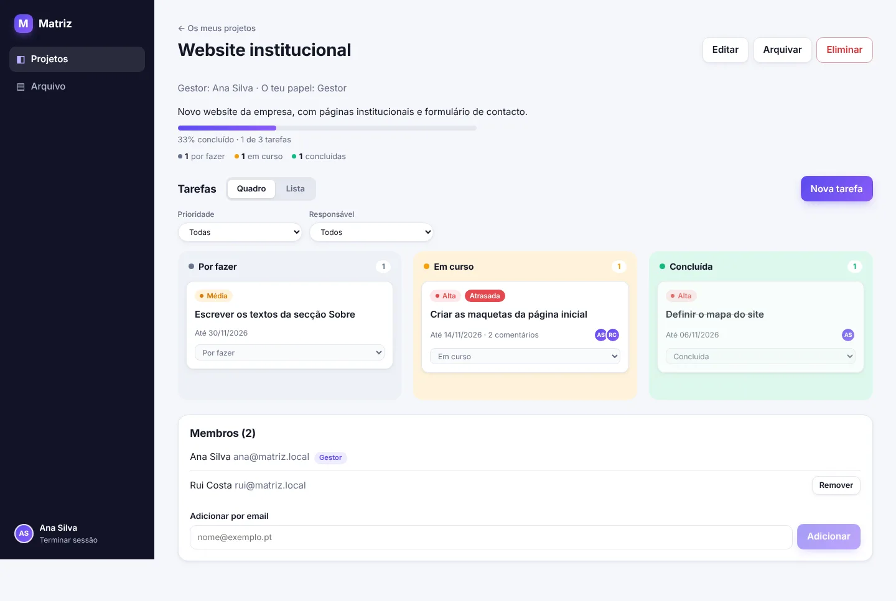
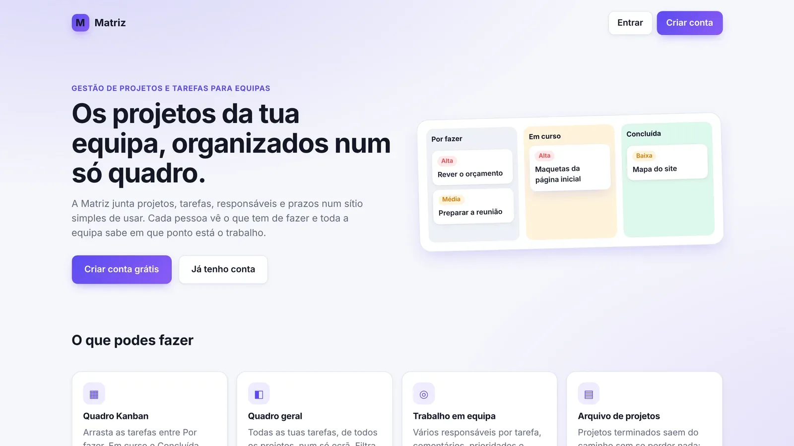

Matriz
Os projetos de uma equipa organizados num só quadro, com cada pessoa a ver só o que lhe diz respeito.
A team's projects organised on a single board, with each person seeing only what concerns them.
Alojada no plano gratuito do Render: o primeiro acesso pode demorar cerca de um minuto enquanto o servidor acorda.
Hosted on Render's free tier: the first visit may take about a minute while the server wakes up.
Em campoOn court



O que fazWhat it does
Projetos e equipasProjects and teams
Quem cria um projeto fica Gestor e adiciona membros pelo email. Projetos terminados vão para o arquivo, só de leitura.
Whoever creates a project becomes its Manager and adds members by email. Finished projects move to a read-only archive.
TarefasTasks
Prioridade, prazo, estado, vários responsáveis e comentários. As tarefas atrasadas ficam assinaladas.
Priority, deadline, status, multiple assignees and comments. Overdue tasks are flagged.
Kanban
Quadro por projeto e quadro geral, com filtros guardados no endereço da página.
Per-project board and an overview board, with filters kept in the page URL.
Acesso seguroSecure access
JWT, passwords com bcrypt, bloqueio após tentativas falhadas, limites de pedidos e um registo que não revela que emails existem.
JWT, bcrypt-hashed passwords, lockout after failed attempts, rate limiting and a sign-up flow that doesn't reveal which emails exist.
Como foi feitaHow it was built
Desenvolvida de raiz na unidade curricular AI-Powered Software Engineering, em cinco fases, cada uma revista antes de avançar.
Built from scratch for the AI-Powered Software Engineering course, in five phases, each reviewed before moving on.
- EspecificaçãoRequisitos, user stories com critérios de aceitação e restrições.
- ArquiteturaMonólito modular, modelo de dados e contrato REST em OpenAPI 3.1.
- ImplementaçãoBackend Spring Boot em clean architecture (regras verificadas com ArchUnit) e frontend React.
- Testes e revisõesPlano de testes, testes com Testcontainers e Playwright, code review e security review.
- EntregaImagens Docker, CI no GitHub Actions com Trivy e SonarQube Cloud, versões com tags e deploy no Render.
- SpecificationRequirements, user stories with acceptance criteria, and constraints.
- ArchitectureModular monolith, data model and a REST contract in OpenAPI 3.1.
- ImplementationSpring Boot backend in clean architecture (rules enforced with ArchUnit) and a React frontend.
- Testing and reviewsTest plan, tests with Testcontainers and Playwright, code and security reviews.
- DeliveryDocker images, CI on GitHub Actions with Trivy and SonarQube Cloud, tagged releases and deployment on Render.
Ficha técnicaTech stack
Backend
Java 21, Spring Boot 3.5 (Web, Security + JWT, Data JPA, Validation, Actuator), Flyway, Maven
Base de dadosDatabase
PostgreSQL 16
Frontend
React 19, TypeScript, Vite, React Router
TestesTesting
JUnit 5, Testcontainers, ArchUnit, Vitest, Testing Library, Playwright
DevOps
Docker, Docker Compose, GitHub Actions, Trivy, SonarQube Cloud, Docker Hub, Render